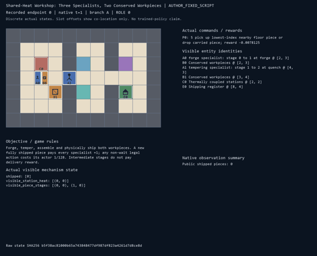
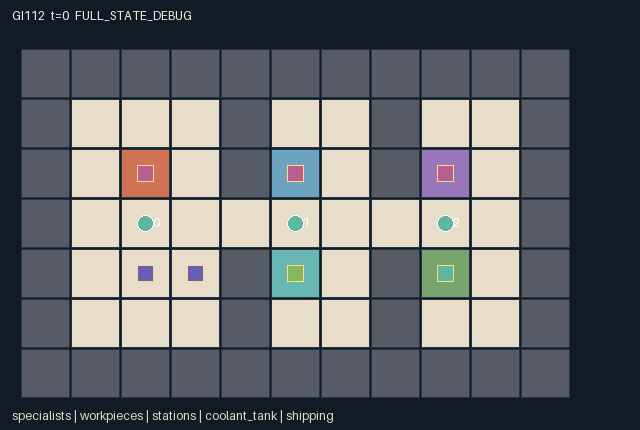

GI112 / SPATIAL
共享热量工坊
锻造、淬火与装配由不同专长承担，实体工件必须交接，热量与工具由大家共享。
Original saved demonstration
Recorded native state, often authored scripts or interventions; information scope and failures are preserved in the original provenance. This is a saved demonstration, not live browser play.

Release verification episode
Untrained uniform legal actions. Actual JAX state sampled along the full original episode; full-state debug camera. No human performance or learning claim.

Run this game
crucibles play --game 112
Start Python locally, then open the address printed by the terminal. Installation, multiplayer, takeover and keyboard controls →
Objective, rewards & ending
Exact task contract
{
"objective": "Forge, temper, assemble and physically ship both workpieces. A new fully shipped piece pays every specialist +1; any non-wait legal action costs its actor 1/128. Intermediate stages do not pay delivery reward.",
"natural_termination": "Both piece identities have been dispatched at shipping after stage 3; otherwise truncate at 96.",
"interaction": "Different specialists are required for successive stages. Carriage is capacity one; consent-based adjacent handoff or floor exchange conserves each piece. Work heats all stations, one shared valve consumes coolant, and narrow partitions constrain transport and passing.",
"observation_access": "Public layout, fixed role identity, clock and shipped count. Other agents, active workpieces, station heat and tank quantity are visible only within Manhattan radius 3. Dynamic scene attributes use the same masks; private work events and heat-vent records are not global event channels."
}Declared per-step reward bounds: -1 to 2. Observability: partially_observable.
Rules
- Two physical pieces must pass raw, forged, tempered and assembled stages before shipping.
- Only worker 0 forges, worker 1 tempers and worker 2 assembles, each while carrying the appropriate piece beside its station.
- Hands hold one piece. A handoff requires adjacent OFFER and ACCEPT actions; floor pickup/drop is also possible.
- A processing action adds four heat to its own station and two to every other station. Passive cooling removes one per transition.
- Work thresholds are six, five and seven for forge, quench and press. Shared processing order rotates; earlier work can block later work.
- One valve use per step consumes one of six coolant units and removes three heat from every station. Excess heat above twelve is safety-vented.
- The two one-cell partition passages make transport order matter. Agents cannot swap squares or enter occupied squares.
- Only fully assembled shipping pays +1 to every worker. Each non-wait action costs its actor 1/128. Both shipments terminate; 96 steps truncate otherwise.
Original mechanism document (historical status wording retained)
# Shared-Heat Workshop: Three Specialists, Two Conserved Workpieces Status: **AUTHORED_NOT_EXECUTED**. Source SHA-256: 14b58f26d52d8cb617abefcb9824e0a4f3fa63399eb7f8f670e17a9e05ca236a. A/O/U/H = 3/112/11/96. All playthroughs and paired interventions are **UNEXECUTED_AUTHOR_HYPOTHESIS**. ## Physical production and conservation An 11 by 7 workshop has three rooms separated by partitions with single-square passages at (4,3) and (7,3). Forge, quench and assembly stations sit at (2,2), (5,2) and (8,2). The shared cooling valve is at (5,4); shipping is at (8,4). Equipment squares are not walkable. Goods are two fixed identities initially on the floor at (2,4)/(3,4), not a replenishing abstract score. Only worker i can advance a carried piece from stage i to i+1 beside station i, for i=0,1,2. All workers can transport, cool or dispatch. Each has one hand slot. Picking up assigns one existing floor piece to that worker, dropping clears its carrier and leaves its position, and a handoff requires a donor OFFER plus an adjacent empty recipient ACCEPT. An unsuccessful offer retains its piece. Rotating actor priority resolves competition for one pickup or recipient. Piece positions follow their actual carrier; dispatch moves the finished identity onto shipping and deactivates its world sprite. No action duplicates or destroys a workpiece. Stage 3 means assembled, not delivered. Only an additional dispatch within one square of shipping marks delivery and grants +1 to every worker. Each sanitized non-wait action costs its actor 1/128. Early processing and transfers have no arbitrary cooperation bonus. Both distinct pieces shipped is the natural completion condition. ## Shared temperature and transport choices Every transition first resolves movement and goods transfers. The thermal manifold then passively loses one heat at each station. One or more legal cooling requests at the valve cause exactly one shared valve opening, consuming exactly one of six units and removing three heat at all stations. It is possible to waste coolant when no heat needs removal. Work is resolved in rotating specialist order. It requires own-station heat no greater than [6,5,7] for the respective role, and adds four to that station plus two to both neighbours. Earlier work in the same transition can therefore close a later specialist's work window. The safe maximum is twelve; overflow is explicitly recorded as vented heat. Heat is not a conserved material: passive dissipation, active cooling and safety venting are named sinks. Coolant is a conserved inventory with coolant + coolant_spent = 6. The legal work mask checks the incoming state's temperature and location. Cooling in this same joint step cannot authorize an action masked illegal beforehand. A legal work attempt can fail after another specialist's earlier heating. The reward cost is still paid for that attempt. A pipeline can stage the second workpiece while another moves through tempering, or the team can finish one item before starting the other. Passing goods across a partition can avoid having every specialist travel, while occupied bottlenecks and limited hands can stall the next transfer. A worker may spend time at the cooling valve to open another worker's future work window. These are source-derived strategy hypotheses, not learned strategies. ## Information, failures and prospective variants Agents see entity payloads and equipment temperatures only within Manhattan radius three. The map, fixed specialist identities, clock and shipped count are public. Remote station temperatures, carried stages and coolant quantities are not leaked through events or entity labels. The renderer's shipping count is exactly the same public counter in native observations. Poor scheduling can waste coolant, block the only passage, repeatedly heat an unavailable workstation or leave a piece stranded on the wrong side of a carrier. Passive cooling prevents a claim that coolant exhaustion alone proves impossibility, but completion within 96 steps is not guaranteed. Different room geometry, work thresholds, stage assignments or initial budgets would require separately specified future variants, not an inference of generalization from this source. ## Declared invariants There are exactly two persistent piece identities. An active piece is either uncarried on the floor or held by exactly one worker, and no worker holds two. Delivered pieces remain stage 3, uncarried, inactive and at shipping. Stage is monotone and bounded 0 through 3; shipment is monotone. Agent positions remain distinct and walkable. Heat stays [0,12]; coolant and spent quantities are nonnegative and sum to six. These are declared/source-reasoned invariants awaiting execution tests. ## Boundary, invalid actions and terminal behavior The native interface is GeneratedEnv.reset(key), observe(state), legal_actions(state), and raw_step(key, state, int32[A]). Native learning receives only float32[A,O] observations and bool[A,U] masks. Out-of-range or masked-illegal actions become action 0 without action cost. Joint conflicts can still prevent legal attempted actions from succeeding. All roles remain active until joint completion; there are no individually terminated roles. At joint completion, only no-op is legal. A nonterminal step increments scalar int32 t exactly once. Natural completion takes precedence over the horizon. An already-terminal raw call preserves every state leaf, clock, observation and terminal cause; it returns zero float32 rewards and all-true dones. No raw autoreset occurs. The agent-keyed public JaxMARL adapter belongs to the separate trusted engineering layer: use agent_0 through agent_2, preserve row/action order and masks, and set the done dictionary __all__ from info.done_all. The raw array contract and frozen learner are unchanged. Adapter execution and compatibility are not claimed here. State indices, sentinels, counts, stages and temperatures use int32; visibility/termination use bool; observations/rewards use float32. All normalization divisors are powers of two. This boundary representation does not replace a previously specified random distribution. The PRNG key is not copied into state. Reset and transitions are deterministic; supplied keys are accepted but unused. The map is public knowledge. Role rendering must honor the same entity visibility masks as native observations and suppress hidden attributes. Only public channels appear in events; private source leaves are not display attributes. Full-state debug views require a separate label. Scene positions, active flags, visibility and attributes bind real state; no presentation-generated transitions or executable markup occur. ## Literal source evidence - Inventory is derived from one carrier field per piece. candidate.py:L15-L16 (exact excerpt SHA-256 617ef01f14d9f224c1593aade6766fb492fae015ff8a2f74e8b14c340383e5f5). - Local observation masks exclude remote equipment and goods. candidate.py:L18-L26 (exact excerpt SHA-256 bd862343241e9dd835eecca9f02a680ff03188da56264b810fa795cac1e11718). - Legal processing is role-, stage-, location- and temperature-dependent. candidate.py:L76-L77 (exact excerpt SHA-256 c6f9f31fad9c26832e2caecc958f579929de588832c5c8fef61523d173f1eca5). - Pickup/drop preserves fixed piece identities and one-slot ownership. candidate.py:L122-L136 (exact excerpt SHA-256 0b1c91e67c51af0f70d3c38fb9867fd82883bc45fce19613be5f315441d49842). - Handoff requires complementary actions and an adjacent empty slot. candidate.py:L137-L146 (exact excerpt SHA-256 5fd4a78e18f11b7bd8e88f8414aa8406f82f02c6a74d737a90a92ca6df64a135). - Cooling consumes real shared inventory before coupled heat additions. candidate.py:L148-L168 (exact excerpt SHA-256 5b05d92f85c181854bf5d5d14481f15654adc4908e2a461f53541894707adae1). - Assembly and shipping are distinct; only new shipments pay. candidate.py:L169-L192 (exact excerpt SHA-256 be367309bb9b21a75d23c71a2638cc41eb3e07d0ad4bc228d4cca41d82260a69). - Raw terminal state remains absorbing. candidate.py:L193-L196 (exact excerpt SHA-256 eecce329e00022e59bc19cf4191a336e7ea8cb5cf4af4ebd18ad074ec584a145). ## Interface method locations - moves: candidate.py:L12-L13. - inventory: candidate.py:L15-L16. - refresh: candidate.py:L18-L26. - reset: candidate.py:L28-L57. - move_options: candidate.py:L59-L66. - legal_actions: candidate.py:L68-L87. - observe: candidate.py:L89-L108. - raw_step: candidate.py:L110-L196. ## Reference attribution and limits Original rules and kernel were authored for this assigned design. No upstream implementation code, layouts, assets, sprites or trained parameters were copied. JaxMARL's README supplied the agent-keyed dictionary and parallel-action integration convention. Pgx's README supplied board-state, explicit legal-mask and external-random-key API reference. Craftax's README supplied the general example of executable spatial resources and staged game mechanics in JAX. PureJaxRL is an algorithm implementation reference, not a new environment library. The supplied Craftax_Baselines PPO-RNN header credits PureJaxRL; it was consulted only as baseline/integration reference and was not copied or substituted for the frozen learner. No reference performance claim is evidence about these games. Snapshot identity was checked in full; consulted passages were API/overview material and the first 120 lines of the PPO-RNN reference. - references\JaxMARL_README.md: [official snapshot origin](https://github.com/bold-lab-ai/JaxMARL/blob/main/README.md), SHA-256 6649d04f5ed05d620e78e8416a00d4db841cf2633ae60fdb3c9729e037a71c15; verified 12438 bytes. - references\Pgx_README.md: [official snapshot origin](https://github.com/sotetsuk/pgx/blob/main/README.md), SHA-256 153f44999e55d5df3e51e13dee6ef418cc9704ddfa26206f1dc5789b9cbbf8df; verified 17543 bytes. - references\PureJaxRL_README.md: [official snapshot origin](https://github.com/luchris429/purejaxrl/blob/main/README.md), SHA-256 d5f40182c924a42cec820931e61a7d5070e48c4c8413c7d16455abc6ea0ef6b0; verified 5023 bytes. - references\Craftax_Baselines_ppo_rnn.py: [official snapshot origin](https://github.com/MichaelTMatthews/Craftax_Baselines/blob/main/ppo_rnn.py), SHA-256 5f93e6a7c3a1e0c551831d75be311735ba495dfdecae51787a1c03a27b1cd011; verified 18983 bytes. - references\Craftax_README.md: [official snapshot origin](https://github.com/MichaelTMatthews/Craftax/blob/main/README.md), SHA-256 7f9757a2047143cf183f7e2e84851a740f386af80dbee050c89b316d66a3d3ff; verified 12388 bytes. ## What was and was not checked Only AST parsing, the supplied whitelist, JSON manifest validation, scene-schema validation, declared-state-key agreement, source byte cap, hashes and script integer-vector structure were checked. The candidate was never imported, compiled, run or numerically simulated. JAX and NumPy were absent from the checker process imports. Reset/step shapes and dtypes, eager/JIT/vmap parity, numerical bounds and conservation under execution, repeated-seed replay, trajectory legality, real paired effects, absorbing execution, rendering, playback/pause/step, public adapter, policy training, solvability and meta-learning remain unexecuted. No acceptance score, success-rate threshold, ranking or final-test information was used.
Commands
Roles & abilities
agent_0 forge specialist: stage 0 to 1 at forge
agent_1 tempering specialist: stage 1 to 2 at quench
agent_2 assembly specialist: stage 2 to 3 at press
Observation permissions
Training receives only the original observation rows. Role cameras use declared visibility; debug cameras are explicitly marked. Local benchmark records log debug exposure and role takeover history.
Exact observation layout
[
{
"slice": [
0,
3
],
"meaning": "Self specialist identity one-hot; role equals ID",
"visibility": "self"
},
{
"slice": [
3,
5
],
"meaning": "Public [t/128,shipped count/2]",
"visibility": "public"
},
{
"slice": [
5,
17
],
"meaning": "Three agent blocks [visible,x/16,y/16,(carry+1)/4]; local L1 radius 3; hidden payload zero",
"visibility": "local"
},
{
"slice": [
17,
27
],
"meaning": "Two piece blocks [visible,x/16,y/16,(carrier+1)/4,stage/4]; local L1 radius 3 and active; hidden payload zero",
"visibility": "local"
},
{
"slice": [
27,
33
],
"meaning": "Three station blocks [visible,heat/16]; local L1 radius 3",
"visibility": "local"
},
{
"slice": [
33,
35
],
"meaning": "Tank [visible,coolant/8]; local L1 radius 3",
"visibility": "local"
},
{
"slice": [
35,
112
],
"meaning": "Public 7x11 workshop map flattened y-major, tile value/8",
"visibility": "public"
}
]Entity visibility & attributes
[
{
"id": "specialists",
"kind": "agent",
"count": 3,
"position": [
"agent_pos"
],
"active": [
"agent_active"
],
"visibility": [
"agent_vis"
],
"attributes": [
{
"state_path": [
"role"
],
"meaning": "Fixed specialist stage index",
"display": "category"
},
{
"state_path": [
"carry"
],
"meaning": "Carried piece index; -1 means empty",
"display": "category"
}
]
},
{
"id": "workpieces",
"kind": "object",
"count": 2,
"position": [
"piece_pos"
],
"active": [
"piece_active"
],
"visibility": [
"piece_vis"
],
"attributes": [
{
"state_path": [
"piece_carrier"
],
"meaning": "Carrier index; -1 means ground",
"display": "category"
},
{
"state_path": [
"piece_stage"
],
"meaning": "Stage 0 raw, 1 forged, 2 tempered, 3 assembled",
"display": "category"
}
]
},
{
"id": "stations",
"kind": "landmark",
"count": 3,
"position": [
"station_pos"
],
"active": [
"station_active"
],
"visibility": [
"station_vis"
],
"attributes": [
{
"state_path": [
"station_role"
],
"meaning": "Station specialist stage index",
"display": "category"
},
{
"state_path": [
"station_heat"
],
"meaning": "Actual equipment temperature from 0 to 12",
"display": "bar"
}
]
},
{
"id": "coolant_tank",
"kind": "resource",
"count": 1,
"position": [
"tank_pos"
],
"active": [
"tank_active"
],
"visibility": [
"tank_vis"
],
"attributes": [
{
"state_path": [
"coolant"
],
"meaning": "Remaining shared cooling units",
"display": "bar"
}
]
},
{
"id": "shipping",
"kind": "landmark",
"count": 1,
"position": [
"ship_pos"
],
"active": [
"ship_active"
],
"visibility": [
"ship_vis"
],
"attributes": [
{
"state_path": [
"shipped"
],
"meaning": "Total fully shipped pieces",
"display": "number"
}
]
}
]Actual verification & provenance
Per-game execution receipt
{
"game": "gi112",
"status": "PASS",
"verification_revision": 2,
"source_sha256": "14b58f26d52d8cb617abefcb9824e0a4f3fa63399eb7f8f670e17a9e05ca236a",
"seed": 20261101,
"runtime": {
"jax": "0.4.38",
"numpy": "1.26.4",
"devices": [
"TFRT_CPU_0"
]
},
"dimensions": {
"num_agents": 3,
"observation_size": 112,
"num_actions": 11,
"max_steps": 96
},
"checks": {
"eager_reset": {
"status": "PASS",
"seconds": 1.9506053924560547
},
"observation_spaces_legal_masks": {
"status": "PASS",
"seconds": 1.378861904144287
},
"eager_step": {
"status": "PASS",
"seconds": 1.907238483428955
},
"jit_reset": {
"status": "PASS",
"seconds": 0.1774158477783203
},
"jit_step": {
"status": "PASS",
"seconds": 1.068390130996704
},
"eager_jit_integer_parity_float_measurement": {
"status": "PASS",
"seconds": 0.0015044212341308594
},
"jit_vmap_reset": {
"status": "PASS",
"seconds": 0.46836256980895996
},
"jit_vmap_step": {
"status": "PASS",
"seconds": 3.336507797241211
},
"outer_autoreset_api": {
"status": "PASS",
"seconds": 1.6457412242889404
},
"full_original_horizon_episode_and_render": {
"status": "PASS",
"seconds": 1.3395137786865234
}
},
"human_scores": null,
"browser_controls": "PENDING",
"failures": [],
"elapsed_seconds": 13.828145503997803,
"float_parity_max_abs": 0.0,
"numerical_parity": "EXACT",
"raw_terminal_absorbing": "PASS",
"terminal_outer_reset": "PASS",
"episode_steps": 96,
"scripted_random_returns": [
-0.5,
-0.5546875,
-0.5
],
"terminal": true,
"demo_information": "FULL_STATE_DEBUG",
"demo_frames": 25,
"render_roles_checked": 3
}Chromium control verification
{
"game": "gi112",
"status": "PASS",
"human_scores": null,
"engineering": true,
"checks": [
"catalog_selected_and_real_native_reset",
"dom_queue_and_native_step",
"second_participant_ownership_and_native_joint_step",
"all_roles_individually_controllable_no_role_cap",
"explicit_debug_camera",
"release_to_pure_ai_without_reset"
],
"seconds": 4.8626625537872314
}Original identity and file hashes
{
"id": 112,
"key": "gi112",
"title": "共享热量工坊",
"summary": "锻造、淬火与装配由不同专长承担，实体工件必须交接，热量与工具由大家共享。",
"tags": [
"专长互补",
"工序接力"
],
"family": "spatial",
"dimensions": {
"num_agents": 3,
"observation_size": 112,
"num_actions": 11,
"max_steps": 96
},
"source_sha256": "14b58f26d52d8cb617abefcb9824e0a4f3fa63399eb7f8f670e17a9e05ca236a",
"manifest_sha256": "83d3487fbdfde1cbf5e19017de3711bb9c29d85727da8d171440253ecadbaede",
"files": [
{
"file": "candidate.py",
"sha256": "14b58f26d52d8cb617abefcb9824e0a4f3fa63399eb7f8f670e17a9e05ca236a",
"bytes": 12178,
"origin": "work/exp_2/game_incubator_v3/community_games222_225_visualization_root222_v1/native154_candidate/registry/v2/games/game-v3-00112/candidate.py"
},
{
"file": "manifest.json",
"sha256": "83d3487fbdfde1cbf5e19017de3711bb9c29d85727da8d171440253ecadbaede",
"bytes": 12900,
"origin": "work/exp_2/game_incubator_v3/community_games222_225_visualization_root222_v1/native154_candidate/registry/v2/games/game-v3-00112/manifest.json"
},
{
"file": "scene.json",
"sha256": "43dc4f4dd8a5cdae8a64536d886e54024fa5b3af9bd1dd55f31a06f5329241d7",
"bytes": 7050,
"origin": "work/exp_2/game_incubator_v3/community_games222_225_visualization_root222_v1/native154_candidate/registry/v2/games/game-v3-00112/scene.json"
},
{
"file": "mechanism.md",
"sha256": "a5303108eca8f8953abf2c5ded56b3159ad3fb6122e7f52c79745a148fa9033f",
"bytes": 11285,
"origin": "work/exp_2/game_incubator_v3/sources/game-v3-00112/attempt_00/mechanism.md"
},
{
"file": "playthrough.json",
"sha256": "ea5326c35ca8aaa49418b5f5c1c9d87eab9c1faf99fb6f0cfcdd92d9eebc04e5",
"bytes": 3552,
"origin": "work/exp_2/game_incubator_v3/sources/game-v3-00112/attempt_00/playthrough.json"
}
],
"original_status": "NATIVE154_REFERENCE",
"original_saved_replay": true,
"release_validation": "PASS",
"human_scores": null,
"browser_validation": "PASS"
}